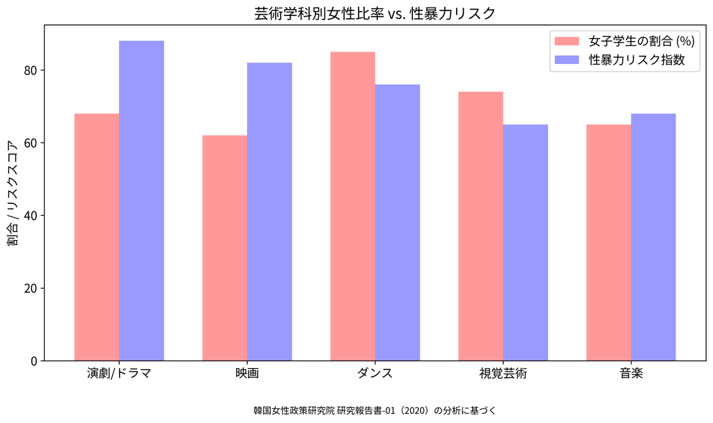

東国大学における性暴力と
制度的裏切りの記録
Gender Watchdogは、東国大学における性暴力問題、組織的隠蔽、そして公的資金流用疑惑を記録するプロジェクトです。同大学のデジタル映像・コンテンツ大学院は韓国女性政策研究院報告書に基づくGender Watchdogの分析で最高の性暴力リスクスコア（81/100）を記録しています。国際大学パートナーシップにおけるTitle IX違反を調査し、性暴力認識を高め、キャンパス内の性暴力被害者を支援しています。

韓国女性政策研究院(KWDI) 2020年報告書から抜粋した大学芸術系の性暴力統計